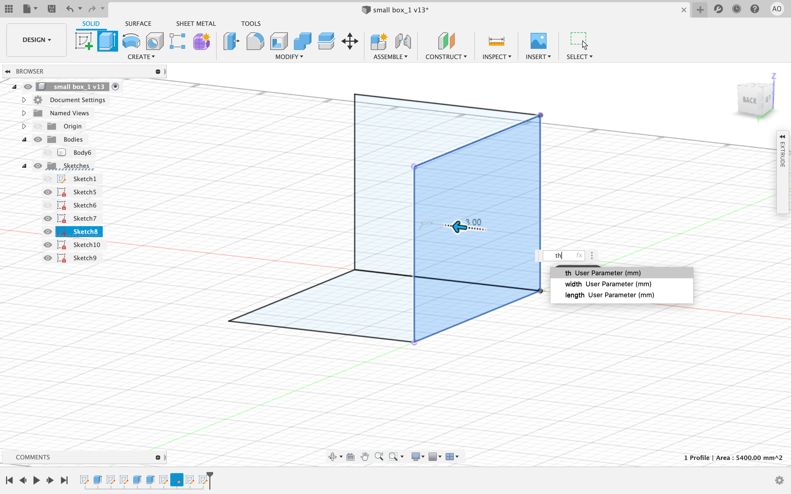
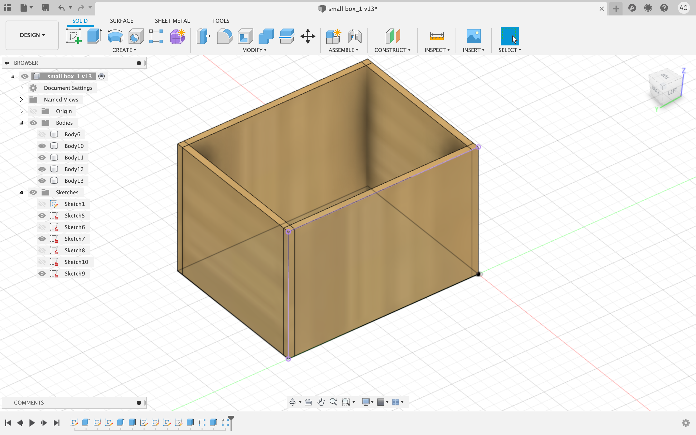
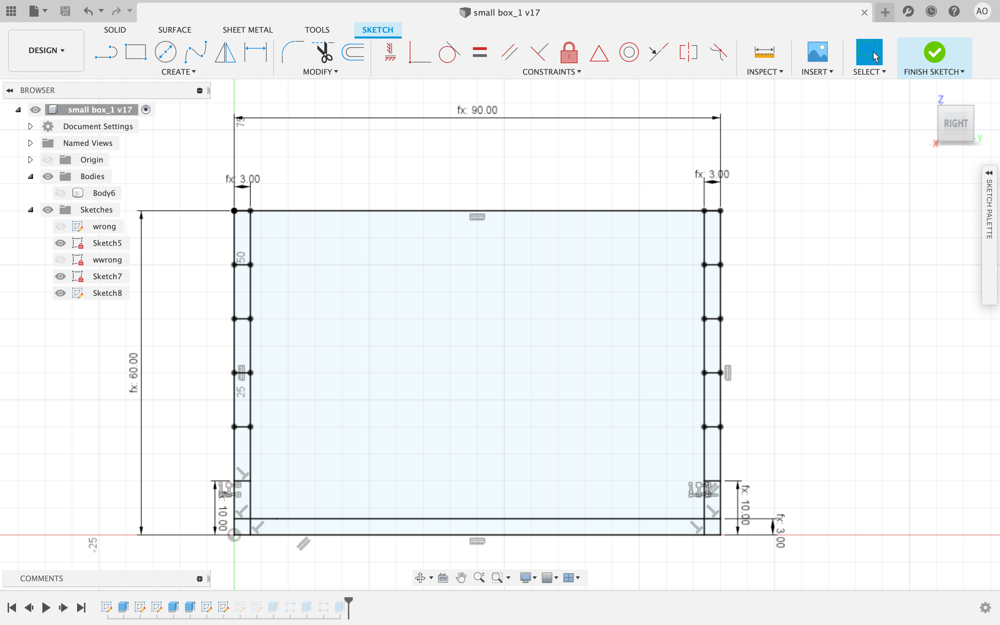
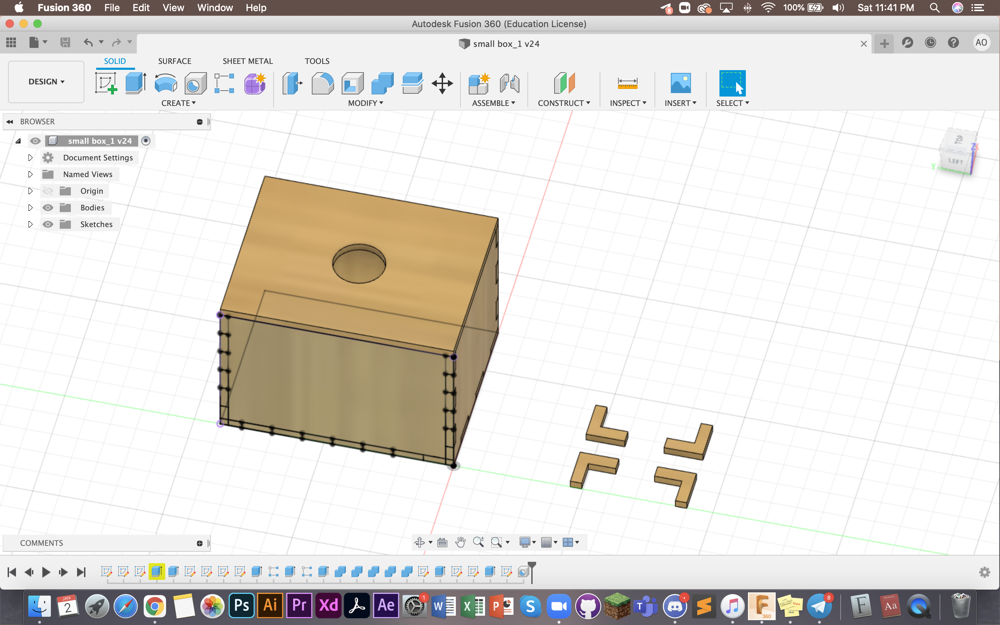
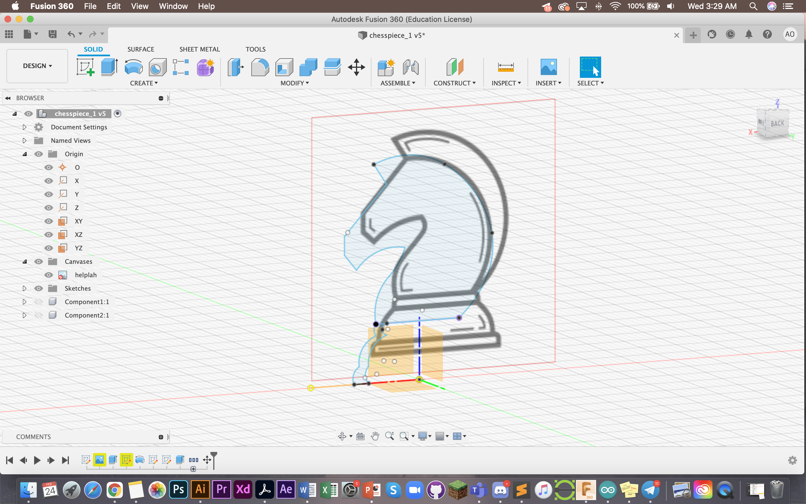
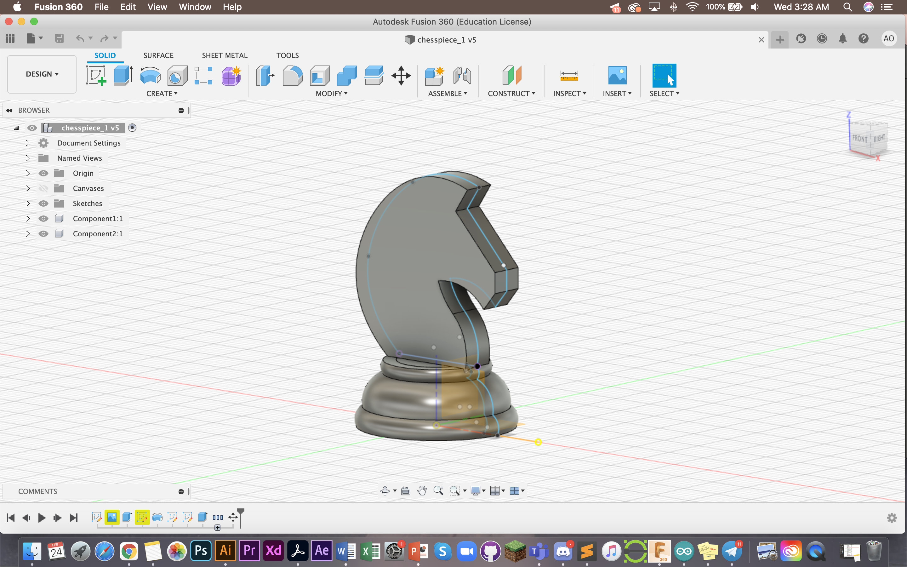
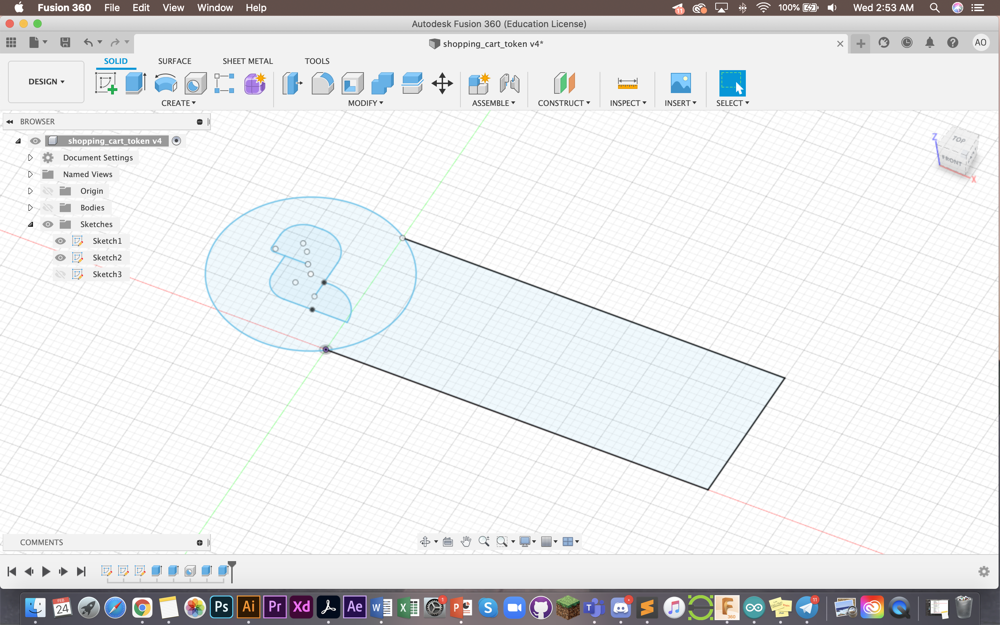
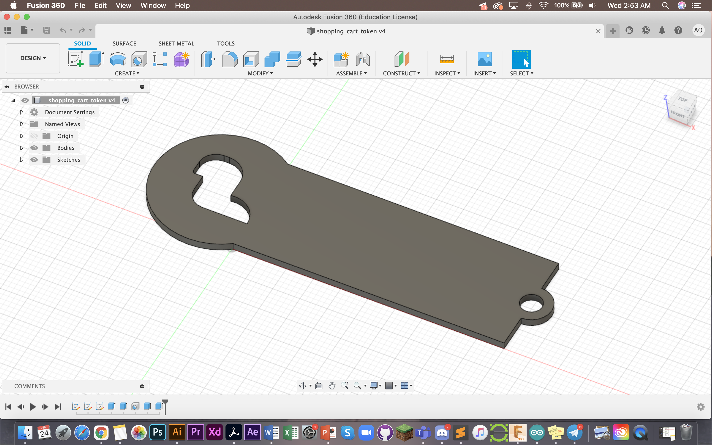
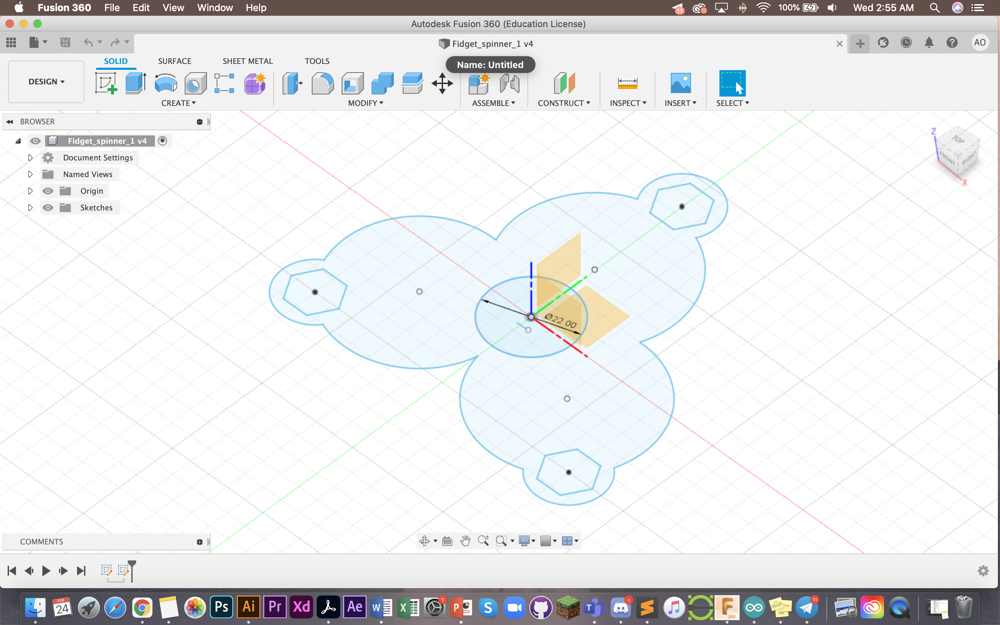

Computer Aided Design
CAD, or computer-aided design and drafting (CADD), is technology for design and technical documentation, which replaces manual drafting with an automated process. It is useful for engineers, designers and professions alike.
Fusion 360
Fusion 360 is a cloud based CAD tool. It allows us to make 2D and 3D drawings to allow exploration of product ideas. It combines organic shapes modelling, mechanical design and manufacturing together. It is downloadable on desktop for most computers (I use apple and it is compatible with IOS). The software is free for students after confirming student ID with the system. One of the main materials that is useful is Kevin Kennedy's Fusion 360 Navigation video.
Here are my first sketches based on the exercises given to us class. You can find these exercises on this EP1000 site by Mr Dorville
1. Create sketches using the tool as circled

As you can see I have done up a sketch of my first assignment here. I used the circle tools, the line tools and measurement tool. I also made sure to draw this top down as you can see from the icon on the right. To do the same as me, just click on the icon.
You can also open up the sketch palette as seen on the right. It makes functions easier to toggle. This is also my completed sketch. You can see how I made use of the sketch tools and dimensions to draw precise shapes. When you type in the measurement you are looking for, it automatically makes the sketch dimension that long.

2. You can extrude sketches to make them 3D

This is a different sketch I did. As you can see here it has been extruded and is now a 3D object. I used the "extrude" tool (as seen in the circle in the picture above), selected my sketch and dragged it out to reach this shape of this dimension. You can do this by manually dragging or keying in the measurements. Both work equally well.
Be careful to select the entire sketch, if you don't this might happen:

This is what happened to me when I only selected the two ends. Mouse over and make sure the entire sketch turns dark blue. That's how you know you have selected the whole sketch.
For my 3rd assignment, I used the "fillet" feature to make the edges rounded. As you can see, the front top, bottom and back of this 3D piece are rounded. The "fillet" function allows you to do that.

Something to note is that the model had to be built from bottom up. I first drew from the top view, left and bottom. This allowed me to extrude the artwork.

3. Making a box to laser cut
Generally, Fusion 360 allows us to laser cut objects digitally. To learn more about laser cutting, you can check out the Computer Controlled Cutting page in the 3D printing tab. The continuation of this box is also on the Computer Controlled Cutting page.

There are many ways to make a box, one method is through "teeth cuts" where you cut the pieces to fit into each other like a puzzle. Here you can see an extrusion of a layer.

This is the box with all 4 sides extruded.

Go back and edit the sketch to sketch out the teeth parts. Try and make it of equal length, here it was done by drawing 3x10 rectangles at the sides.
After cutting one particular side, you can use the "combine" too (as seen above) to cut and shape the other pieces. This is how I did the base. I used the combine>cut too and selected the base, followed by the other 3 sides. Theck the "keep tools" box so that the components will cut the base and still all remain.

Here you can see the finished box including the lid and stopper components I made seperately. This box is then laser cut which you can check out more of in Computer Controlled Cutting page.
4. Designing a chess piece to 3D cut
First I had to have a reference photo to follow, this is the one I chose.

I then imported this as an SVG into Fusion 360. It is treated as a canvas. From there, I outline and draw out the shape of my knight which I will later need to extrude.

Here is the extruded final. Most of these features have already been covered earlier. The knight has been extruded 180mm. For the base, I drew the shape of the width and used the function "Revolve" to achieve a hollow base. Another thing which I realised later on should have been solid (more in 3D printing)
5. Other designs done in class
The following are two things that we were tasked to try and design in class. First was a tag/coin slip and the other was a fidget spinner.
  
Thank you! That's all :)